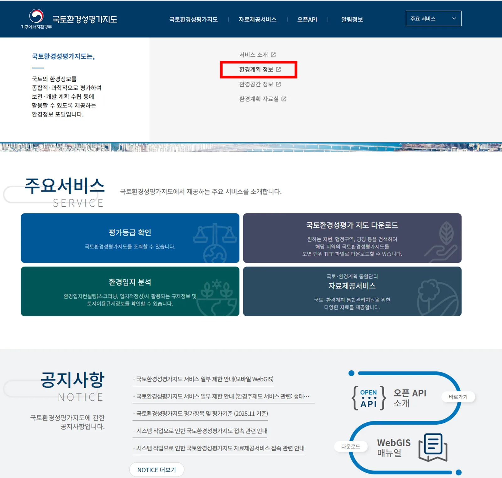
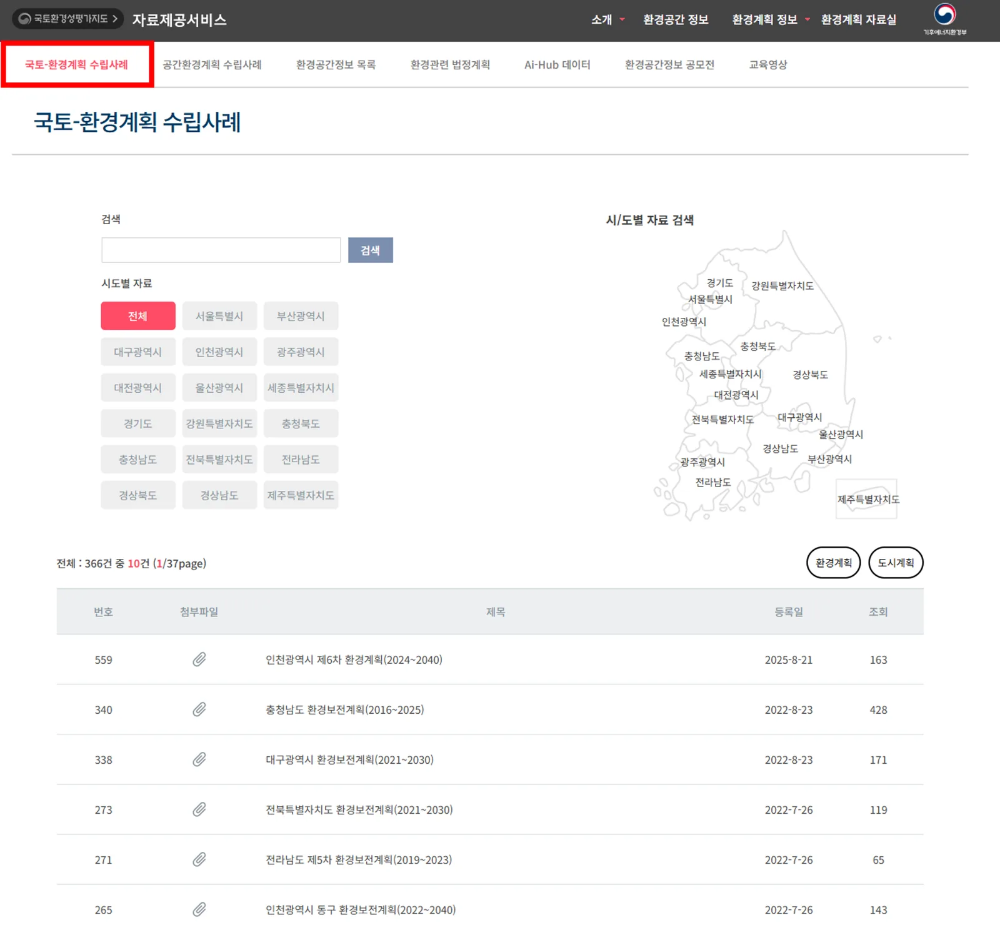
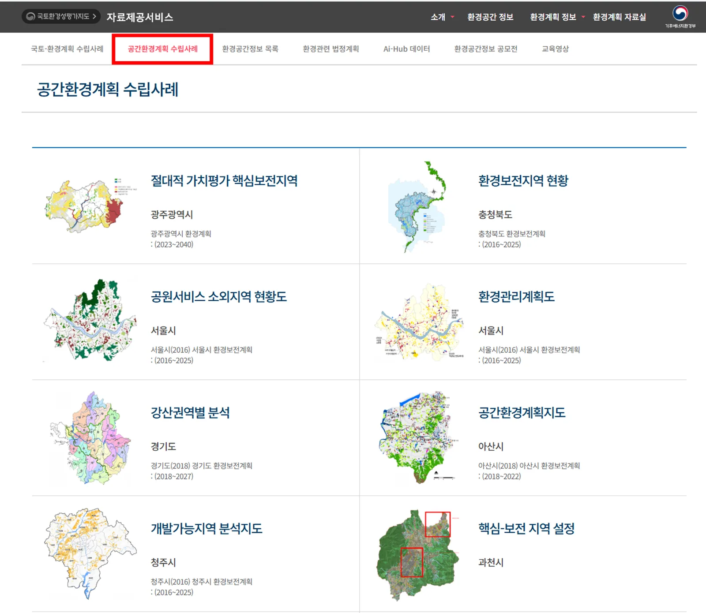
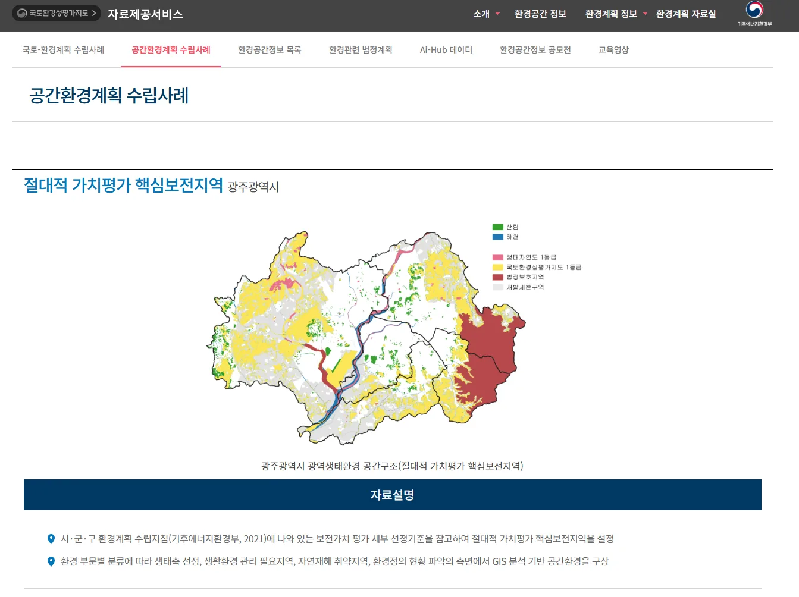
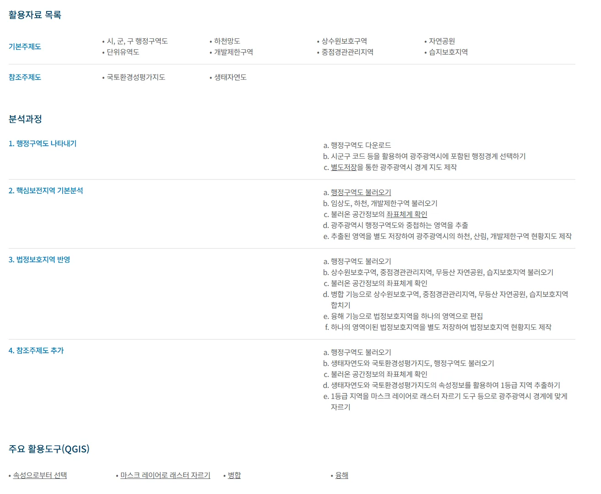
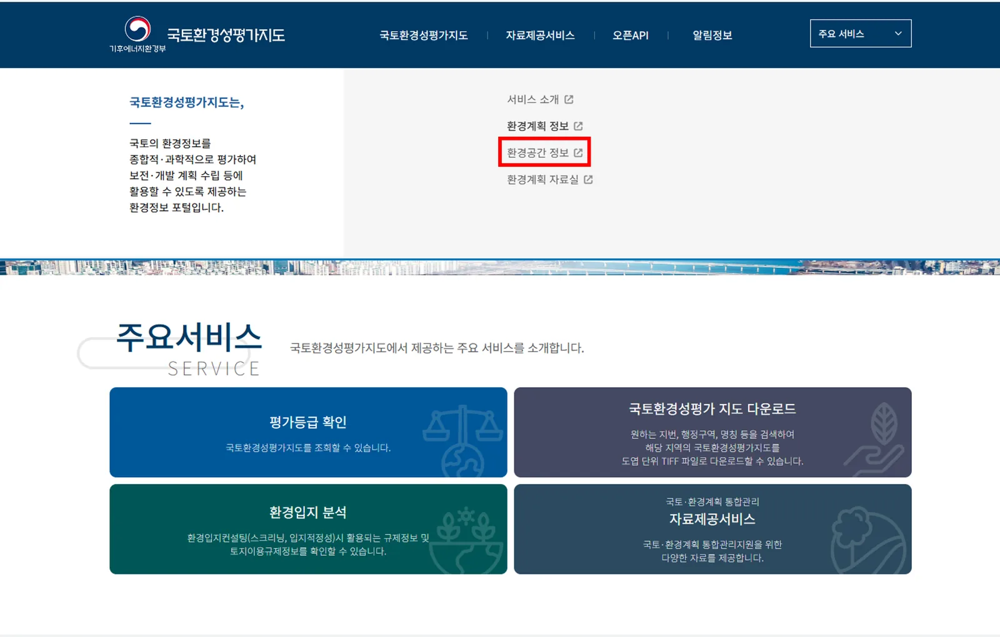
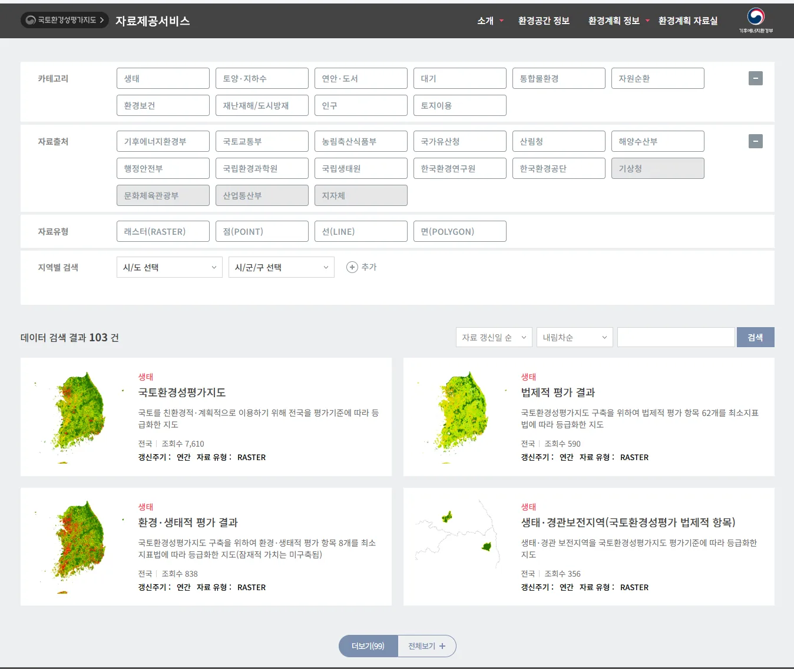
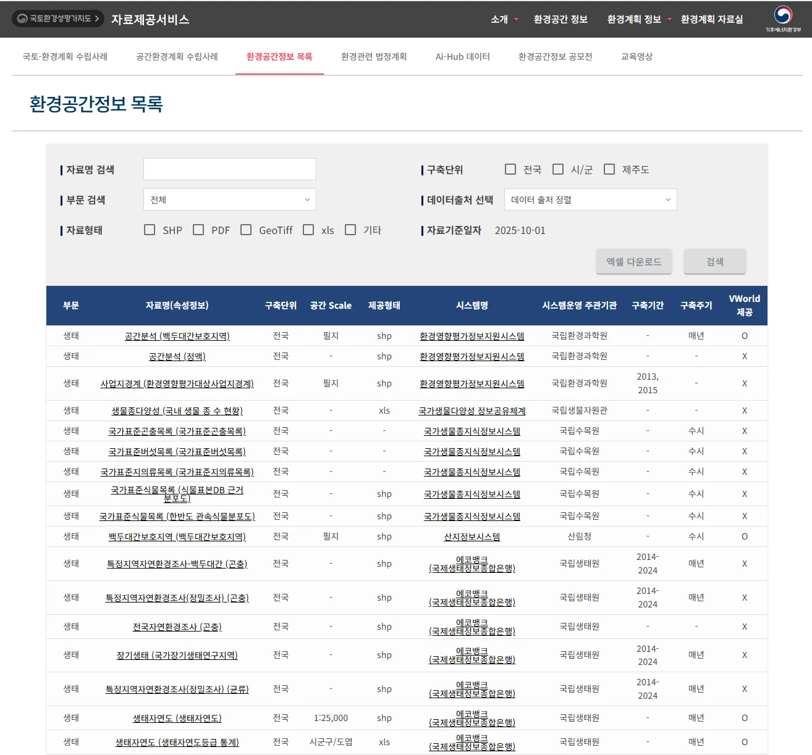
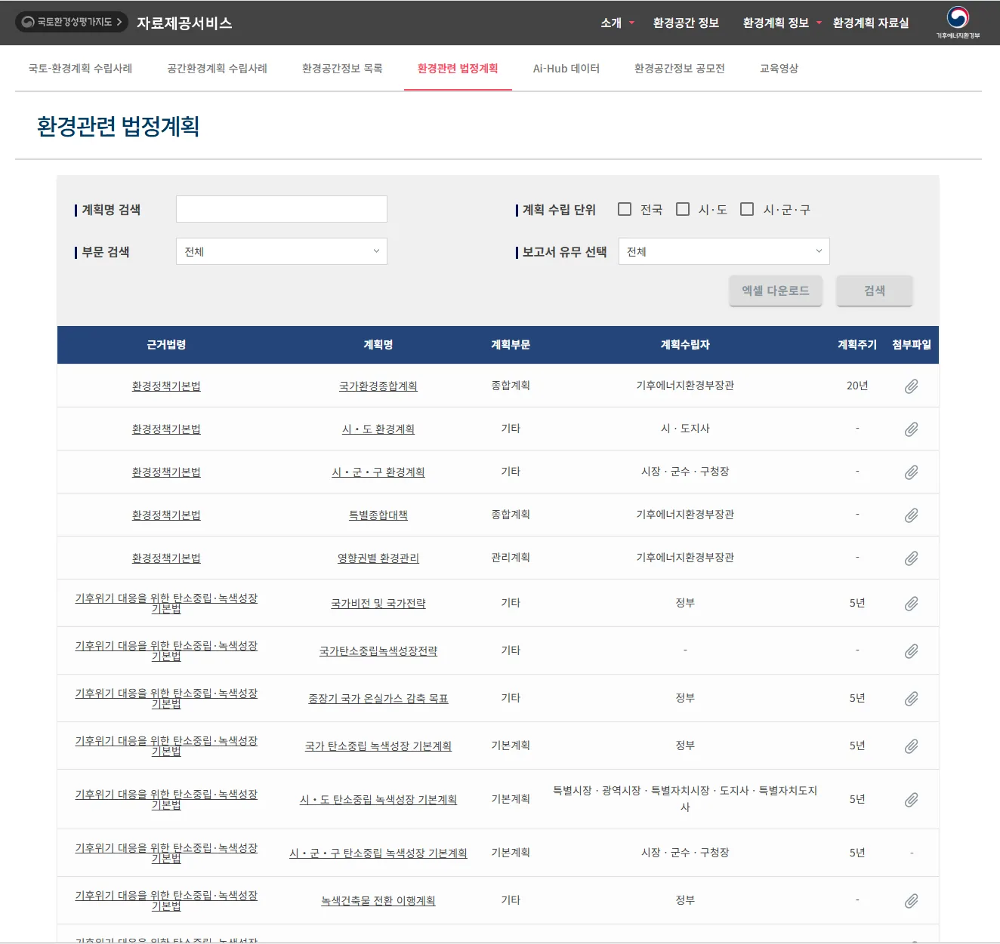
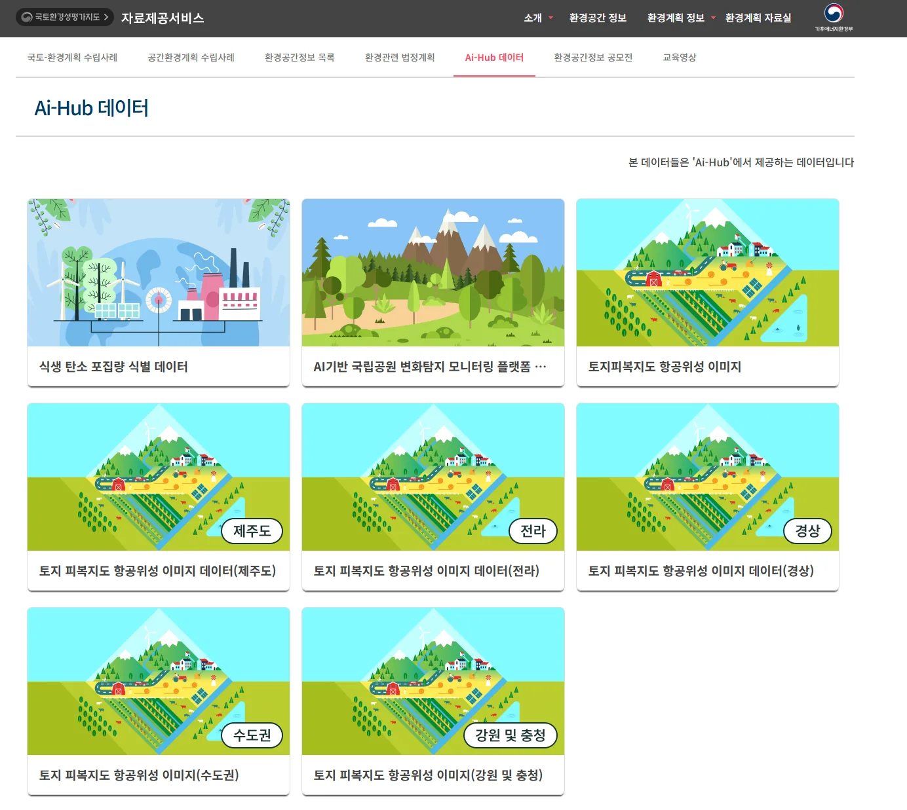

01지역 환경 현황 분석
- 우리 시·군·구의 등급별 면적과 생태적 우수 지역을 파악
- 등급통계 메뉴에서 시·군·구 단위로 1~5등급지의 면적과 비율(%)을 확인
- 레이어 조회 → 국토환경성평가지도 1등급지에서 우리 지역의 핵심 생태축이 어디에 형성되어 있는지 시각적으로 파악
- 투명도 조절 위성지도와 겹쳐 보면서 1등급지가 실제 산림인지, 수변인지 등 지형적 특성 분석
02계획 상충성 분석
- 개발 예정지와 보전 가치가 높은 곳이 충돌하는지 확인
- SHP 파일 업로드에서 '산업단지 계획'과 같은 개발 예정지 SHP파일 업로드
- 다중 레이어 중첩에서 1등급 레이어와 업로드한 계획선을 겹쳐서 '등급 침해 면적'을 분석
- 토지이용규제 연계에서 상충지역의 필지를 마우스 우클릭하여 법적 제한 사항을 교차 검토
03공간환경구조 및 보전 전략 수립
- 어디를 복원할지 공간적으로 결정
- 가시권 분석을 통해 주요 경관 보호 지역이나 문화재 주변에 높은 건물이 들어설 경우 생태 경관에 미치는 영향을 미리 시뮬레이션
- 거리/면적 측정 설정하려는 폭이나 선형 연결구간의 길이를 측정하여 계획의 정밀도 높임
04계획 확정 및 정책 보고
- 지도 다운로드 (JPG/PDF): 분석 결과가 반영된 지도를 고해상도로 내려받아 환경계획서 본문에 삽입
- 메타정보 엑셀 다운로드: 계획에 포함된 레이어들의 최신 갱신 일자와 근거 법령 정보를 엑셀로 내려받아 부록(데이터 출처)에 명시
05타지자체 환경계획 사례 참고하기
- 환경계획 정보 → 국토-환경계획 수립사례 메뉴로 접속하여 지자체별 계획 문서 확인
- 우리 지역과 인구 규모, 지형적 특성이 유사한 지자체의 선행 사례 검색
- 과거부터 최신 계획까지 시계열별 사례를 검토하여 환경 정책의 변화와 발전 방향 분석
- 공간환경계획 수립사례 탭에서 타 지자체의 우수 지도 제작 사례(핵심보전구역 설정, 소외지역 분석 등)를 참고
- 개별 사례의 활용 데이터 목록, 분석 알고리즘, 주요 분석 도구 등을 학습하여 우리 지역 환경계획에 참고
    


06범부처 데이터 연계를 통한 통합 환경계획 수립
- 자료제공서비스 → 환경공간 정보 탭에서 산재된 환경 관련 공간 정보를 단일 플랫폼에서 통합 조회
- 토양·지하수, 재난재해, 인구 분석, 토지이용 등 환경계획 수립에 필수적인 10개 카테고리, 103건의 데이터 제공
- 국토부(토지), 산림청(식생), 기상청(기후) 등 유관 기관의 최신 정보를 연계하여 행정적 일관성을 갖춘 통합 공간 환경계획 수립 가능
- 래스터, 포인트, 폴리곤 등 다양한 자료 유형을 선택하여 분석 목적에 맞는 정밀한 공간 분석 환경 지원
 


07환경공간정보 목록 활용 가이드
- 국내 산재된 환경 공간정보의 출처, 규격, 갱신 주기 등을 기록한 데이터 통합 명세서 제공
- 다운로드 전, 어떤 데이터가 존재하는지와 생성 기관을 한눈에 파악
- 분석에 적합한 데이터 포맷(SHP, GeoTiff, XLS 등)과 공간 스케일(필지 단위 등) 사전 검토 가능
- 환경계획 수립 시
- 데이터 가용성 판별: 특정 분석에 필요한 공간자료의 존재 여부 확인
- 행정 신뢰도 확보: 계획서에 인용할 데이터의 공식 출처 기관과 기준 일자를 정확히 파악하여 보고서의 객관성 강화


08환경관련 법정계획 데이터베이스 활용
- 환경정책기본법, 탄소중립기본법 등 계획 수립의 근거가 되는 법령 즉시 확인
- 국가(종합계획) - 시·도(환경계획) - 시·군·구(기본계획)로 이어지는 환경 계획의 수직적 체계 도식화
- 우측 첨부파일 아이콘을 통해 실제 승인된 계획서 원문을 다운로드하여 세부 내용 검토
- 환경계획 수립 시
- 상위 계획과의 정합성 검토: 지자체 환경계획 수립 시, '국가환경종합계획'이나 '국가 탄소중립 녹색성장 전략'의 목표치와 우리 지역의 계획이 일치하는지 대조하는 근거로 활용
- 법적 필수 지표 추출: 각 법령에 명시된 계획 수립 주기(예: 탄소중립 기본계획 5년)와 반드시 포함되어야 할 항목을 누락 없이 파악


09Ai-Hub 데이터 연계 및 활용
- 국가 AI 데이터 포털(Ai-Hub)과 연계하여, 환경 행정에 즉시 적용 가능한 학습용 고해상도 시각 데이터 및 AI 분석 모델 결과물을 제공하는 곳
- 핵심 데이터셋
- 식생 탄소 포집량 데이터: 지자체 탄소중립 실천 계획 수립 시, 우리 지역 산림·녹지가 실제로 흡수하는 탄소량을 수치화하는 근거가 됨
- 국립공원 변화탐지 모니터링: 드론/위성 영상을 AI가 분석한 자료로, 산림 훼손이나 생태계 복원 상태를 시계열로 파악할 때 유용함
- 지역별 토지피복 항공위성 이미지: 일반 지도보다 훨씬 정밀한(수도권, 경상, 전라 등 지역별) 항공 사진 데이터를 제공하여 현장 조사 없이도 정밀한 지형 분석이 가능
- 실무 활용 시나리오
- 탄소중립 전략 수립: "우리 시의 녹지 면적 대비 탄소 흡수 효율이 얼마나 되는가?"에 대한 답을 식생 탄소 포집량 데이터를 통해 과학적으로 제시
- 비대면 환경 모니터링: 사람이 접근하기 어려운 급경사지나 보호지역의 변화를 AI 변화탐지 데이터를 활용해 행정 업무의 효율성 극대화
- 디지털 시뮬레이션 구축: 고해상도 항공위성 이미지 데이터를 GIS 소프트웨어에 입혀서 지역 개발에 따른 환경 영향을 입체적으로 시뮬레이션 할 때 활용

